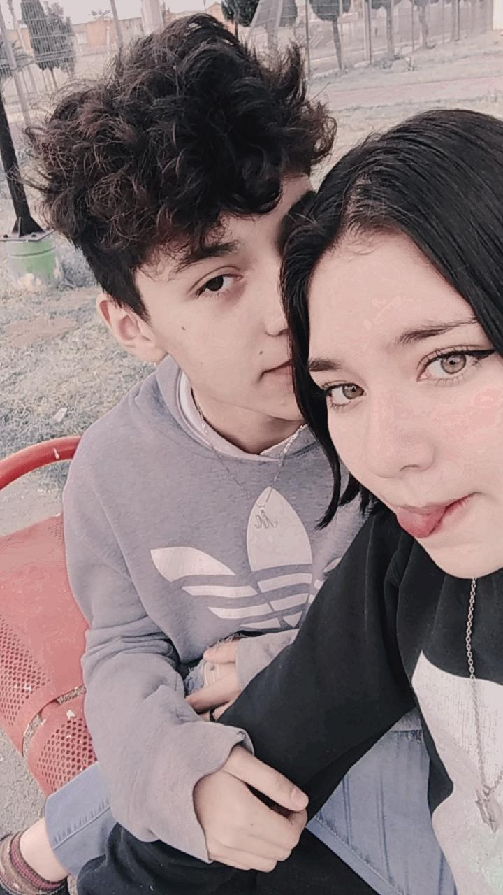
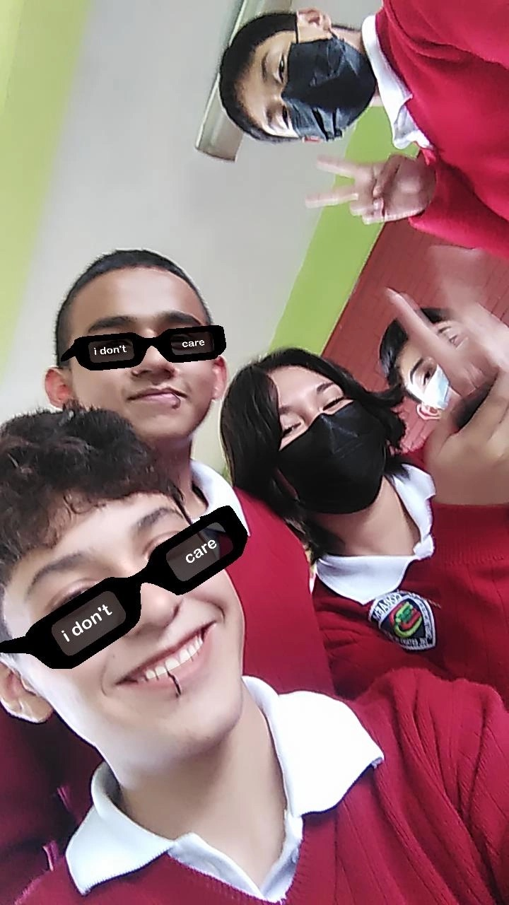

Mi llegada a la preparatoria fue un nuevo comienzo. Aunque estaba nervioso, pronto reencontré a dos grandes amigos: David, con quien fui al kinder, y Alan, a quien conocía desde la primaria. Juntos formamos un equipo increíble.
En el primer año tuve una experiencia incómoda con una chica que me pidió ser su novio, aunque a mí me gustaba su amiga. Más adelante, tuve una relación con esa amiga que duró dos años. Fue una etapa llena de emociones, crecimiento y muchas enseñanzas.
En tercer semestre llegó un cambio: teníamos que elegir la carrera técnica. David eligió ingeniería porque le gustaba, Alan por seguir a su novia, y yo opté por TICS porque siempre me ha apasionado la tecnología. Mi novia también eligió esa carrera, así que seguimos juntos en el mismo grupo.
Durante la prepa, enfrenté algunos problemas en mi relación y descubrí quiénes eran mis verdaderos amigos. Me apoyé mucho en David y Alan, quienes siempre estuvieron ahí para mí.
Ahora que estoy por terminar la prepa, miro hacia atrás y me siento orgulloso de todo lo que he logrado y de las personas que me han acompañado.
 